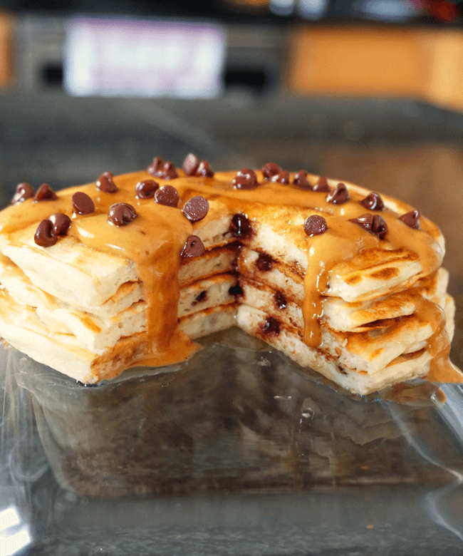

Protein Pancakes

Protein Powder Pancake Mix
The dry ingredients for the Protein Pancakes and Waffles mix yields approximately 20 servings. Prep this mix ahead of time to make cooking a lot easier.
A single serving size will yield 3 pancakes and have approximately 40 grams of protein and 540 calories per meal (with 1 tbsp of peanut butter). Make sure to use a
50/50 protein powder blend or the pancakes will not turn out correctly.
Ingredients
Pancake Mix
- 500g vanilla whey/casein blend
- 400g oat flour (mix oats in blender)
- 300g tapioca flour or cornstarch
- 20g baking powder
Recipe
- 56g pancake mix OR 25g vanilla whey/casein blend,
20g oat flour, 10g tapioca flour or cornstarch, 1g of baking powder
- 60g liquid egg whites
- 75g plain nonfat Greek yogurt
- 25g water
- 1/2 tbsp cinnamon
Steps
- Combine all ingredients under Recipe in a bowl and mix thoroughly.
- Heat griddle/skillet on medium heat and spray with butter/oil.
- Add batter and cook for a couple of minutes then flip.